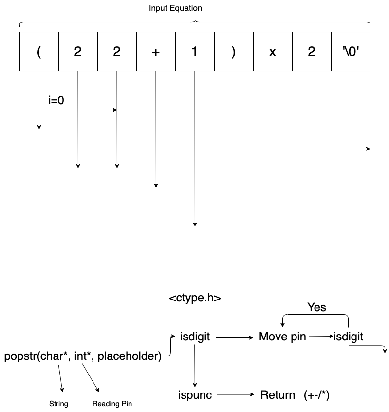
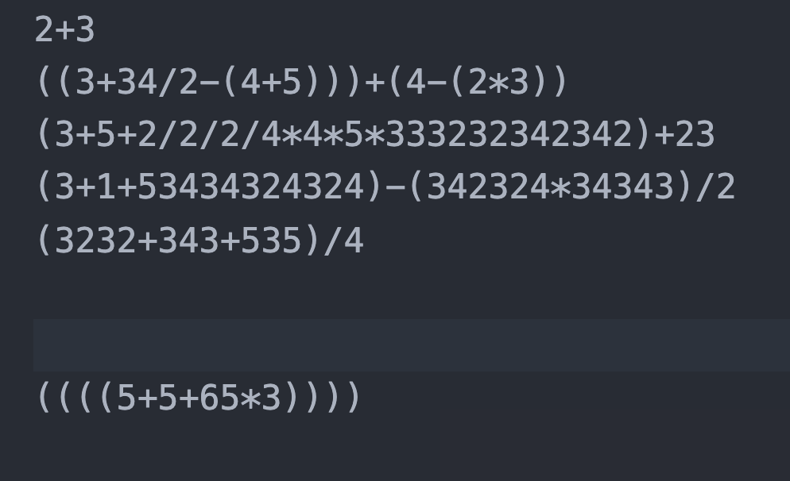

EvilEval: Calculator in C (Parser)
Algorithm

Structure
NumbersOperatorsOrdersParanthesis counter
Definition
- What is
Orders- The order to be evaluated in an equation
Relation between <tt>Numbers</tt> / <tt>Operators</tt> / <tt>Orders</tt>
length(Numbers)=length(Operators)+ 1- Ex.
2/4
- Ex.
Length(Operators)=Length(Orders)
Evaulation
# Do a/b
b = pop(Numbers)
a = pop(Numbers)
op = pop(Operators)
pop(Orders)
r = eval(op, a, b) # div(a,b)
push(Numbers, r)
Initiate an evalution
op_new = read()
order_new = order_current + order(op_new)
b_new = read()
if (Query(Orders) < order_new) # Add to list
push(Orders, order_new)
push(Operators, op_new)
push(Numbers, b_new)
else
Do Evalution
Length affected by single evalution
How to update order base <tt>()</tt>
order_base = 0
while (symbol != EOF)
symbol = read_char()
if symbol == `(`
order_base += 2
else if(symbol == `)`)
order_base -= 2
else
Do Operation
end
Rule
Evaluatewhen the incoming order is smaller than the end of the stack
String Operation
Stategy:
Read a line, and pop it one-by-one

Usage of <tt>fscanf</tt>
- Source: Fun with “scanf” in c
Return Value
- Source: TutorialPoint
Data Type and Range
| Data Type | Range | Size |
|---|---|---|
int | -2,147483648E9 to 2.147483647E9 | 4 bytes |
double | 2.3E-308 to 1.7E+308 | 8 bytes |
|Char|1 Byte|
- Source: TutorialPoint
Constraints
- Maximum storage: 1GB
- Time limit: 1s
Number of parameters
Input String Size
| Symbol | Description |
|---|---|
| $L$ | length of a line |
| $T$ | Lines |
- $L < 10^6$
- Maximum usage of memory
- 8MB
- RAM: 10 MB
- Maximum usage of memory
- $L\cdot T \leq 10^6$
- 1 MB
Strategy of storage
- String
- Store in stack
- Numbers / Operators / Orders
- Store in Heap (
malloc)
- Store in Heap (
Test: https://onlinegdb.com/BJHmN8lNd
Implementation
What do I need?
- Package
- Stack in Heap
- Allow big storage
- String Parser
- Get
+-*/ - Get Numbers
- Get
- Equation Eval
- Stack in Heap
- Algorithm
- Arithmatic Operation
- In
Equation Eval
- In
- Arithmatic Operation
- Create test data
input.txtoutput.txt
Stack
Use Array to implement a stack
What data type we need?
- Stack for
double:Numbers - Stack for
int:Ordersstack_int
- Stack for
enum:Operatorsstack_op
Structure of a stack
structure stack:
maxsize : integer
top : integer
items : array of item
Procedures
Initiation
procedure initialize(stk : stack, size : integer):
stk.items ← new array of size items, initially empty
stk.maxsize ← size
stk.top ← 0
Push
procedure push(stk : stack, x : item):
if stk.top = stk.maxsize:
report overflow error
else:
stk.top ← stk.top + 1
stk.items[stk.top] ← x
Pop
procedure pop(stk : stack):
if stk.top = 0:
report underflow error
else:
stk.top ← stk.top − 1
r ← stk.items[stk.top]
return r
Test Data
To solve test/data/input.txt to test/data/output.txt. Set path to the top of the project.
make DATA
File reader in Julia
julia> open("myfile.txt", "w") do io
write(io, "Hello world!")
end;
julia> open(f->read(f, String), "myfile.txt")
"Hello world!"
With Formatter.jl for formatting the scintific representation.
Format of input/output
| Input | Output |
|---|---|
|  |  |
- Two
\nfor separate inputs - One
\nfor separate outputs
Notes of C language
enum
/* Foreward declaration. */
typedef enum direction Direction;
enum direction {
North,
South,
East,
West
};
int main(void)
{
Direction dest = East;
return 0;
}
How to create a struct with element stored in heap
The struct have to be created in stack and use the pointer to heap.
Struct
struct a;
int maxsize;
init_stack_double(&a, maxsize);
Initiation
sd->items = (double*)malloc(maxsize*sizeof(double));
sd->maxsize = maxsize;
sd->top = 0;
}
Definition: stack.h:18
Print double and float
Use "%f". Double and float are the same for printf
Structure of double and float

Absolute number in C
$|4|$
fabs(-4)